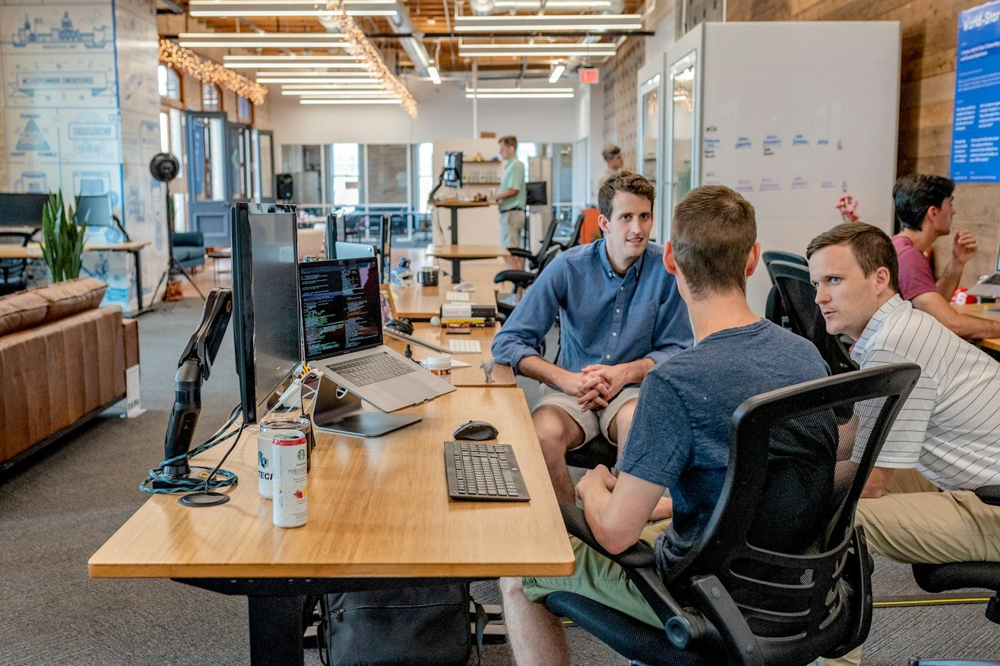

An interactive module
Inclusive
Practice at Work
How teams are built, how decisions get made, and who gets heard. Six short scenes and two activities.
What you'll take away
By the end of this course you will be able to:
- Describe what diversity, equity and inclusion actually mean in a working team — and how the three differ from each other.
- Recognise stereotyping where it really turns up — in hiring, in rostering, and in who gets handed the interesting work.
- Apply the behaviour guidelines to a situation you are realistically likely to meet.
Your route through
Three parts. Open the one that's unlocked to begin.
Three words, three different jobs
They get used interchangeably. They shouldn't be.
A workplace is diverse when the people in it differ — in age, background, culture, faith, class, ability, gender, sexuality, training and length of service. Diversity is a description. It is countable.
Activity one
Six situations
Each one is something that could plausibly happen this month. Your job is to decide which reflect inclusive practice — and which are worth flagging.
Drag each card into the box where you think it belongs.
Sort the situations
Drag each card into Inclusive or Worth flagging. Three belong in each.
Prefer not to drag? Use the two buttons under the card, or press 1 or 2.
It rarely looks like prejudice
It looks like a quick, reasonable decision.
Almost nobody sets out to stereotype. It arrives as a shortcut — a sensible-sounding reason, reached quickly, by someone with too much on. That is precisely why it survives: it never announces itself, and it is always defensible after the fact.
- Hiring Who "fits" — and what that word is quietly doing.
- Rostering Who gets asked to be flexible, and who never is.
- The good work Who gets the project that gets noticed.
Activity two
Walk the rules
Six statements about how a team behaves. Each one is a gate along a walkway — decide whether it holds up. Three of the six are true.
Just say what you think — your character does the walking.
Say “True” or “False”, or press the button. Either works.
Take as long as you like. You can’t fail this.
Ten seconds, three moves
Noticing is the easy part. This is the rest.

The gap between spotting something and doing something about it is usually filled with working out what to say. It does not need to be. Almost every case is covered by one of three small moves, and none of them require a meeting.
- Name it "That was Priya's idea." One sentence, in the room, while it still counts.
- Ask it "What do we mean by fit?" A question is harder to dismiss than an objection.
- Change the default A rota, a rule, a template. Anything that stops it depending on who remembers.
Activity three
Three questions
The last one. These are about judgement rather than recall — you will see why each answer works as soon as you choose it.
Pick the answer you would defend.
The reasoning comes either way.
Nothing is timed.
Knowledge check
Three questions. You'll see why each answer works.
How you did
Fifteen decision points across the three parts.
Module complete
That's the groundwork
Inclusion isn't a policy document — it's the sum of small decisions about who gets asked, who gets heard, and who gets the benefit of the doubt. Take one of these situations into your next team meeting.
Certificate of completion
This is to certify that
Your name
has completed
Inclusive Practice at Work
Nothing you type here leaves this browser.
Choose Save as PDF in the print dialogue to keep a copy. The printed version switches to a paper treatment — dark ink on cream, so it does not burn a cartridge or come out blank where backgrounds are stripped.